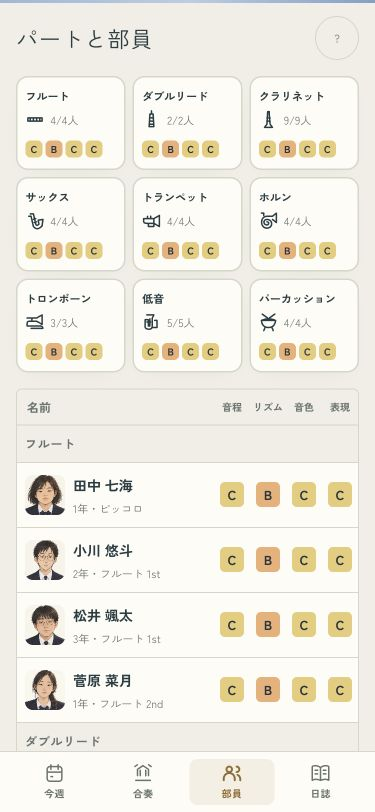
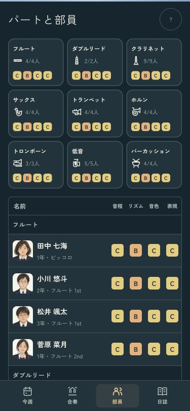
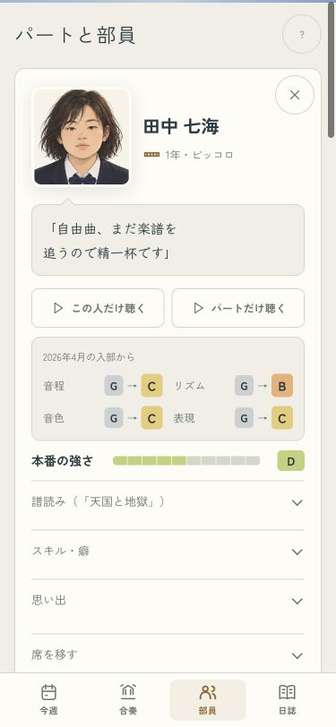
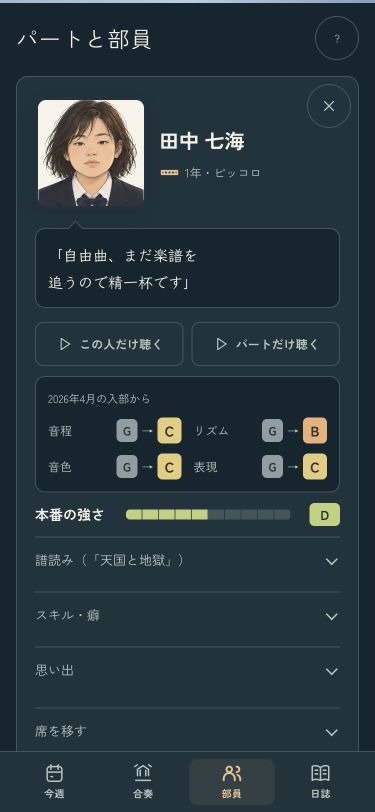
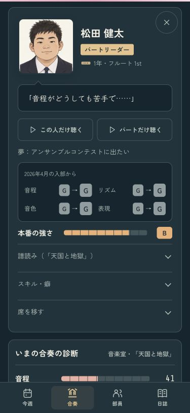

顔と成長が見える部員の画面
パート欄を小さくし、名簿の顔と名前を大きく。カードは、本人のひとことと入部からの4つのランクを先に見られます。譜読み・スキル・思い出は、押すと開く形です。
名簿 · 375px
ライト
ダーク
部員カード · 375px
右上の閉じるボタンも44px。名簿から開いたカードを閉じると、選んでいた人の位置に戻ります。
ライト
ダーク
入部したばかりの子
変わっていない力も、そのまま表示